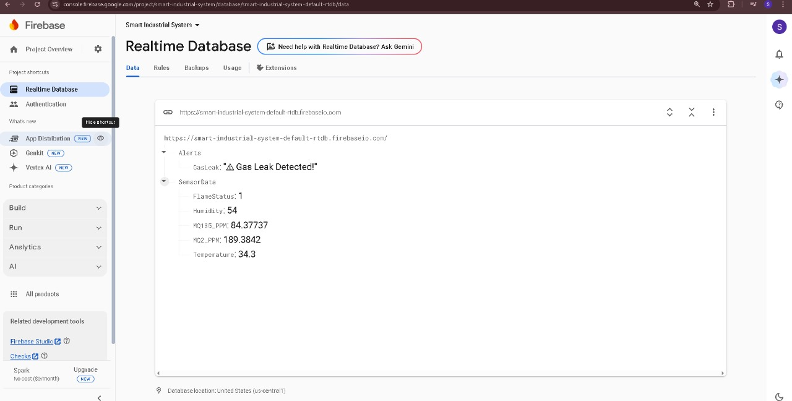
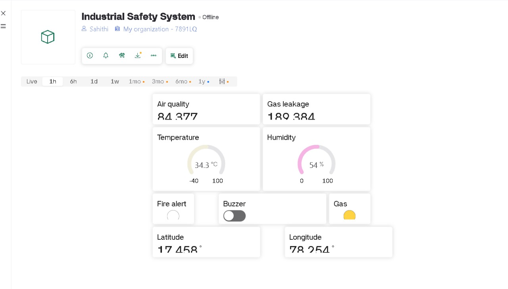
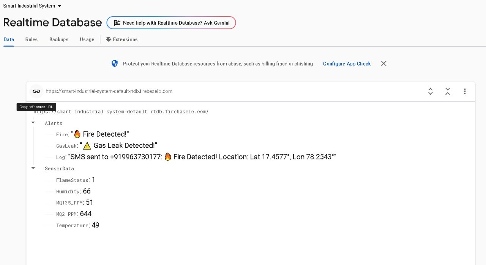
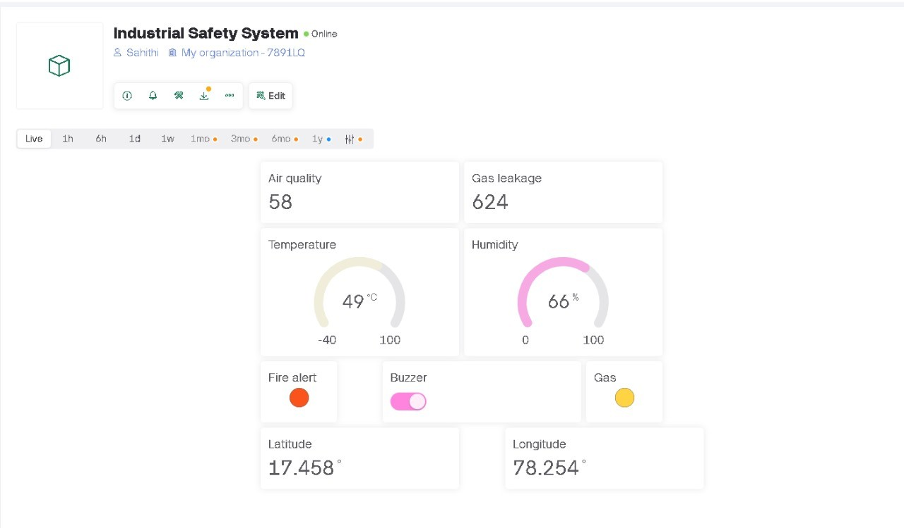
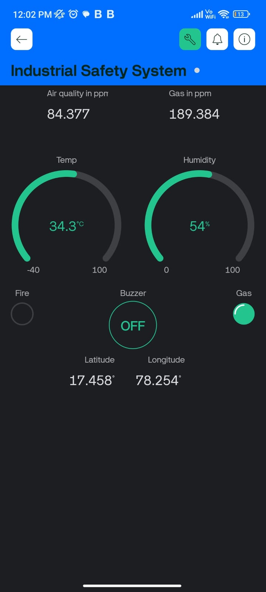
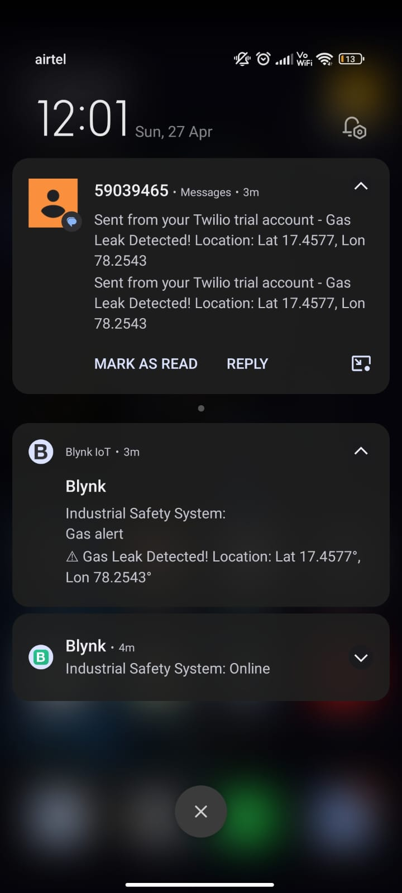

Advanced workplace safety monitoring with real-time alerts
This project presents an IoT-based industrial safety system designed to enhance workplace safety by monitoring environmental hazards such as temperature, gas leaks, smoke, and flames using an ESP32 microcontroller. The system integrates multiple sensors to collect real-time data, processes it through a central controller, and triggers notifications through buzzer, LED, Firebase, and Blynk platforms. Emergency contacts, including fire stations and hospitals, are automatically informed through Twilio services, ensuring rapid hazard identification and response with comprehensive data visualization on a dashboard.
The MQ-2 gas sensor continuously monitors air quality, detecting harmful substances like carbon monoxide, ammonia, and volatile organic compounds (VOCs). The system provides real-time readings to the microcontroller and triggers immediate alerts when dangerous gas levels are detected, preventing inhalation risks and potential explosions.


Our dual-sensor approach provides complete fire detection coverage:
When fire or smoke is detected, the system immediately triggers signals to the control unit, enabling rapid response to prevent fire spread.



Real-time monitoring dashboard featuring:

Automated SMS alerts sent via Twilio API to registered emergency contacts including fire stations, hospitals, and authorities. Ensures immediate notification of critical safety events.